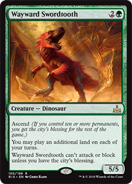
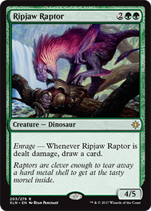
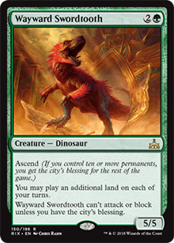
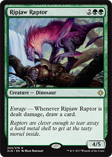

It has been a while since the Ixalan block was released, and with the announcement of today it's becoming increasingly clear that we will not see new dinosaurs in Standard. With the announcement of the next block being Ravnica, there is no knowledge that there are dinosaurs in this plane, so we have to cross your fingers to get something out of Core 19, which will come out in June. However, there is no reason for sadness. With the release of Dominaria, there were important additions in the green color, making the deck very aggressive and with a very low cost of mana (Stompy) and more than that: allowing a green only deck to be not only playable, but also to enter the Meta Game on Standard !

With the addition of those Dominaria cards, green has leveled up to get a very nice monocolor deck. And best of all: despite the addition of some non-tribal cards, the deck still does not lose its identity, which is playing with dinosaurs. More than half of the creatures on the deck are our giant reptiles, so stay calm.
The Llanowar Elves gave an insane acceleration in green color on turn one. A simple card that adds an additional mana causes cards like Steel Leaf Champion or Wayward Swordtooth to enter turn two. With this, it's possible to conjure a Ghalta, Primal Hunger in turn three!
Speaking of them, we probably have the best green addition, and it only works effectively with mono-green decks because of the GGG cost and with Llanowar Elves in turn one: Steel Leaf Champion. A 5/4 entering turn 2 and which can only be blocked with creatures with power 3 or more, is VERY strong and is the most aggressive card than any card in Standard format. He can already attack on turn three and most likely cannot be blocked due to his ability.
Territorial Allosaurus has been revealed for some time, and although it is a very simple card, it is very effective on this deck. It costs only 2GG and is a 5/5 creature, and if i drew it on endgame, it can become a removal creature, fighting with some poor guy. In addition, it decreases by 5 the cost of Ghalta, Primal Hunger.
We have a new useful land too, Memorial to Unity. As we will be playing with four copies of Llanowar Elves and Steel Leaf Champion, we have removed the Commune with Dinosaurs to not risk lose one of these cards that is very important to the deck. It replaces the Commune, and the good thing is that its ability can be done on the opponent's turn, played as an instant spell.
And the cards we already know, how will they interact on this deck?


The strategy of this Stompy deck is to be aggressive quickly, with strong creatures. Because of this, it's important for the mana curve to have enough cards that costs two or three, leaving some heavy ones (heavy on that deck means 4 mana) for later.
Merfolk Branchwalker is an essential card because with its ability to explore, it can get 3/2 or give a land, winning a draw. In addition, you still have the option to put the revealed card into the graveyard, avoiding the unwanted draw on the next turn. It's very important to accelerate our game.
Drover of the Mighty can still do a good job on the deck, because as more than half of the creatures are dinosaurs, it will be 3/3 practically all the time, for a cost of 1G only, and still generating mana if we have difficulty with lands.
Cherished Hatchling is a new addition on any of the decks we have made so far on this site. It's mana cost is low, and you can do 2 damage every turn, who's going to risk blocking and having a dinosaur come into play? If the opponent takes damage, just conjure a dinosaur in the second main phase. In addition, you still have the option of leaving it to block and traps, since we can play dinosaurs with flash.
Deathgorge Scavenger is a very offensive card and can be used in place of the Cherished Hatchling. It's very good against decks like Scarab God, exiling the opponent's options. In addition, it helps to hold the game a little longer each time it enters or attacks, causing us to gain life, or buff itself. If you think you're having trouble with mana cost early in the game, we suggest you replace it with four copies of Cherished Hatchling, and leave it for the sideboard.
 



Thrashing Brontodon gained prominence after the release of Dominaria. Several decks in Meta Game are using many artifacts and enchantments, so this card is mandatory for the main deck, nor does it have to be on the sideboard. In addition, it is a 3/4 creature with cost 1GG. Very good.
Wayward Swordtooth is here to make Ghalta enter on turn three, as follows:
Turn 1: Land + Llanowar Elves
Turn 2: Land + Steel Leaf Champion
Turn 3: Land + Wayward Swordtooth + additional land = reduced Ghalta's mana cost ten, additional land untapped and Llanowar Elves untapped to generate mana. Just the GG that Ghalta needs to enter the battlefield!
In four mana drop, we have two viable and very good options: the new dinosaur that Dominaria has brought to us, Territorial Allosaurus, which we have already talked about in this post up there, and Ripjaw Raptor. The difference between them is that the Alosaaurus helps a little more effectively in reducing the mana cost of Ghalta and can be a creature and removal if we have mana available, and the Raptor has one point of power less than Allosaurus, but the ability every time they take damage to draw a card it's very good, be attacking or blocking. Therefore, it is up to you to choose.
And to finish off creatures of this deck, of course we could not leave Ghalta, Primal Hunger out. It's good four copies of them. That's right, you read right: four copies. The reason is simple: it will most often enter with the cost of mana reduced to the maximum, paying only GG to enter on battlefield. Only one copy of that is enough to destroy any opponent, and if it's removed, they will still have three more copies on this deck.

And to finish, the deck practically only has creatures, but has two instant that surely fit very well here.
Blooming Defense is undoubtedly one of the best cards that green has in Standard, and it protects very well from any removal, or even buff our creatures. I strongly expect that some option with hexproof will come out as good as replacing it when Kaladesh block leaves Standard on October. Hopes for Core19 or the return to Ravnica (again)!
Ancient Animus is an improved version of Pounce. We replaced Savage Stomp with it because we had more creatures that are not dinosaurs (Steel Leaf Champion guilty), and not to mention that it is an instant spell, very good for traps or removal in the opponent's turn before or during phase of combat. In addition, if used on Ghalta, it receives a +1/+1 counter.
With that, we finished our jurassic mono-green stompy deck. I'm playing with it those days, and you can be sure of one thing: it's far more aggressive and better than a dinosaur ramp deck, whether it's mono-green, Gruul or Naya.
I hope you have enjoyed this deck, and again as we said in the previous dinosaurs deck: of all the decks we've tested, this was the best result against competitive decks. A sign that we are progressing more and more :)
Hugs, and have fun!
a.